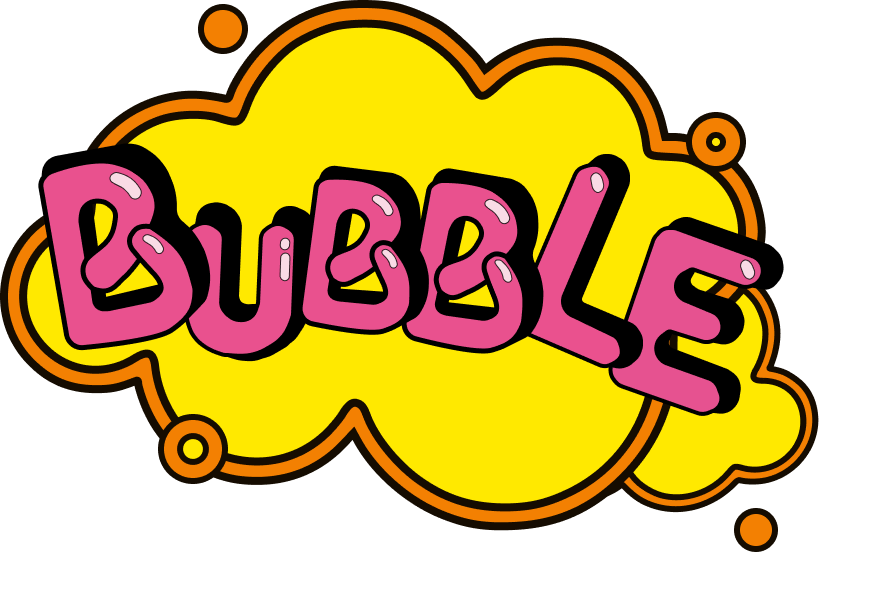

TUTORIAL
Como Jogar
- O objetivo do jogo é marcar o máximo de pontos possível ao estourar as bolhas que aparecem na tela.
- Clique nas bolhas azuis e passe o cursor nas rosas para estourá-las e ganhar pontos.
- Evite clicar nas bolhas verdes, pois você perderá pontos.
- Use a tecla "D" do teclado para remover uma bolha verde da tela e continuar jogando.
- O jogo dura 30 segundos. Tente marcar o maior número de pontos antes que o tempo acabe!
© Victor Wesley - Todos os Direitos Reservados